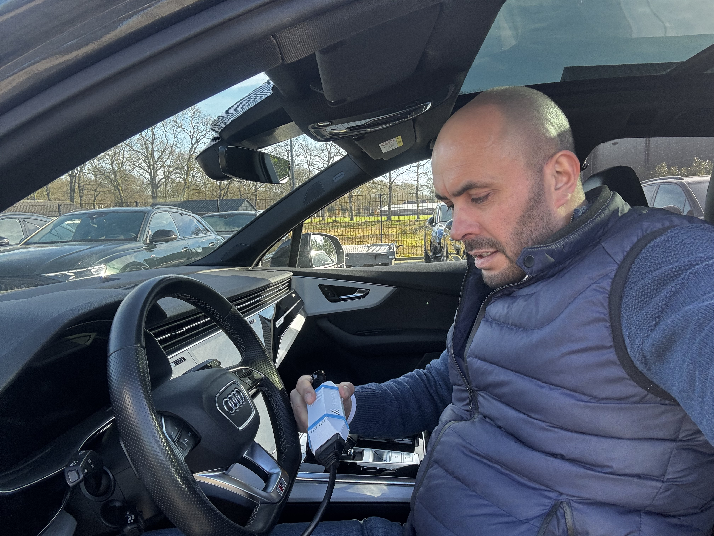
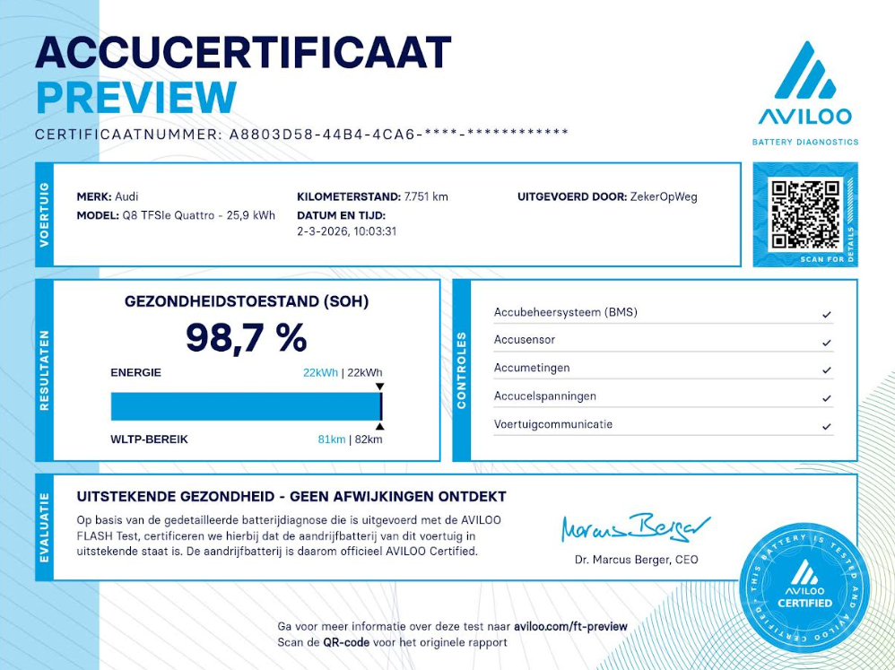

Onafhankelijk · TÜV-gecertificeerd · Meting op locatie
Koopt u een gebruikte EV of hybride?
Koopt u een gebruikte EV of hybride?
Koop dan op feiten — niet op vertrouwen.
De aandrijfaccu bepaalt waarde, rijbereik en risico. Met een onafhankelijke AccuCheck voorkomt u financiële verrassingen ná aankoop.
Plan onafhankelijke AccuCheck
Volledig onafhankelijk uitgevoerd
TÜV-gecertificeerde meetmethode
Geen verkoopbelang
Op locatie bij het voertuig

Waarom dit essentieel is vóór ondertekening
- Accugezondheid bepaalt restwaarde en onderhandelingspositie
- Onzichtbare degradatie beïnvloedt toekomstig rijbereik
- Garantieclaims zijn gekoppeld aan State of Health
- Eén afwijking kan duizenden euro’s verschil maken
Meting bij het voertuig zelf
Geen universele snelle uitlezing. Geen verplaatsing. De meting vindt plaats bij de auto die u daadwerkelijk koopt.

Internationaal erkende meetmethodiek
Diagnose met TÜV-gecertificeerde AVILOO apparatuur. Onafhankelijk en objectief.

Internationaal erkend accucertificaat

Digitaal geleverd na uitvoering. Geschikt voor aankoop, onderhandeling en dossieropbouw.
€149
Inclusief btw · Op locatie uitgevoerd · TÜV-gecertificeerd rapport
Beperkt aantal metingen per dag om kwaliteit en onafhankelijkheid te waarborgen.